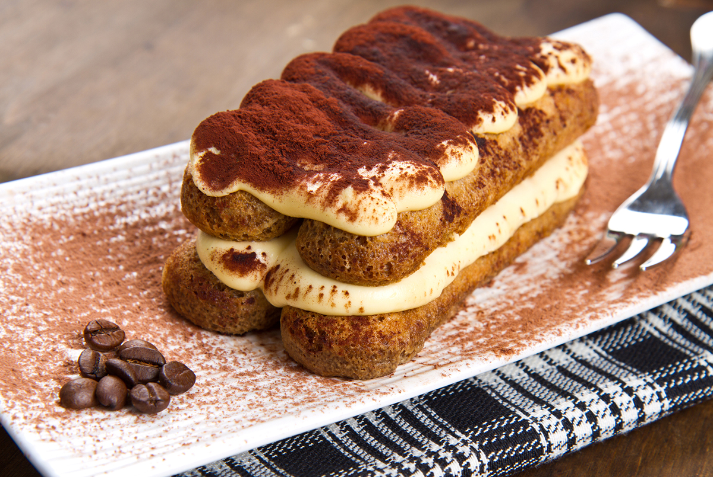
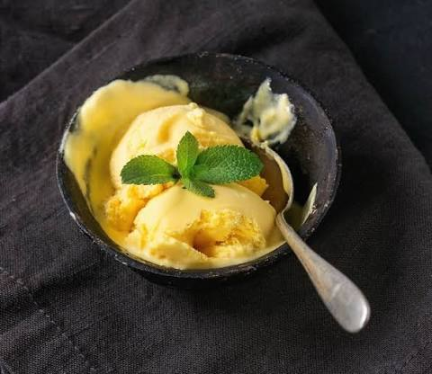
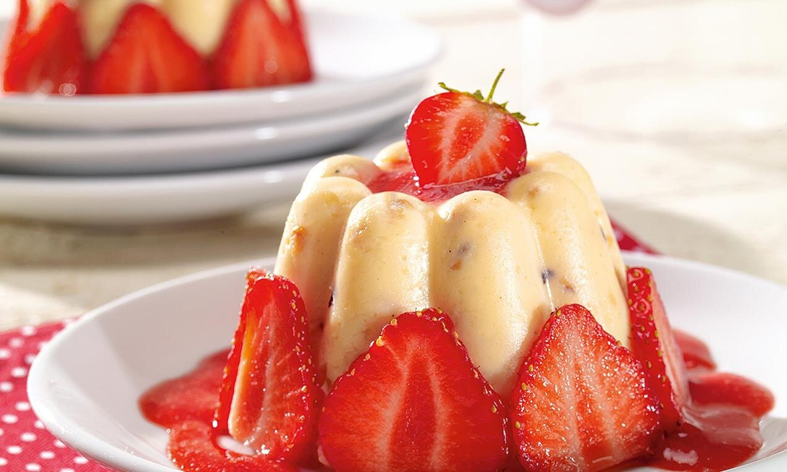

Tiramisu Tradizionale
Klasszikus olasz desszert kávéba áztatott savoiardi babapiskótával, selymes mascarponekrémmel és prémium holland kakaóporral meghintve.

Mangófagyi
Hűsítő, egzotikus desszertkülönlegesség az érett gyümölcsök legjavából.

Mogyorós vanília puding eperszósszal
Tradicionális desszert modern, texturált köntösben.
